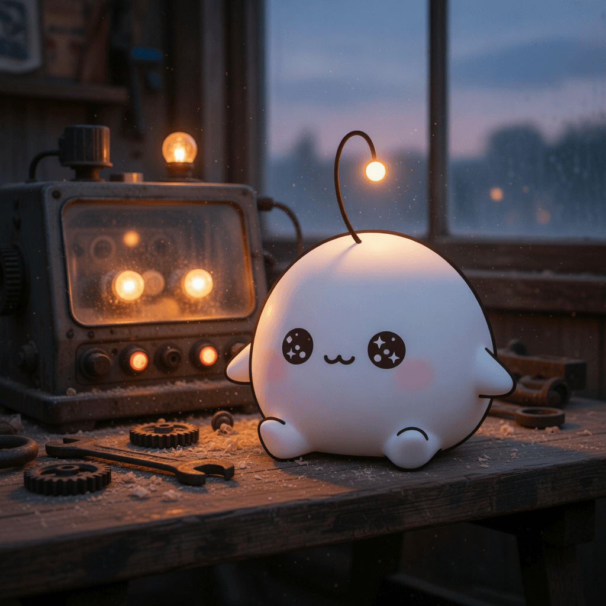

September 22, 2026
September 22, 2026

Inspiration
OpenAI GPT–6 Astra breaks Enigma message that has resisted solution since 2005
A message that resisted every attempt since 2005 finally falls. Patience is not passivity — it is keeping the question open until the right instrument arrives.
Microsoft killed FoxPro in 2007. Anyway, here's FoxPro revived
A language declared dead in 2007 returns anyway. Tools do not die when support stops; they wait quietly for the people who still need them.